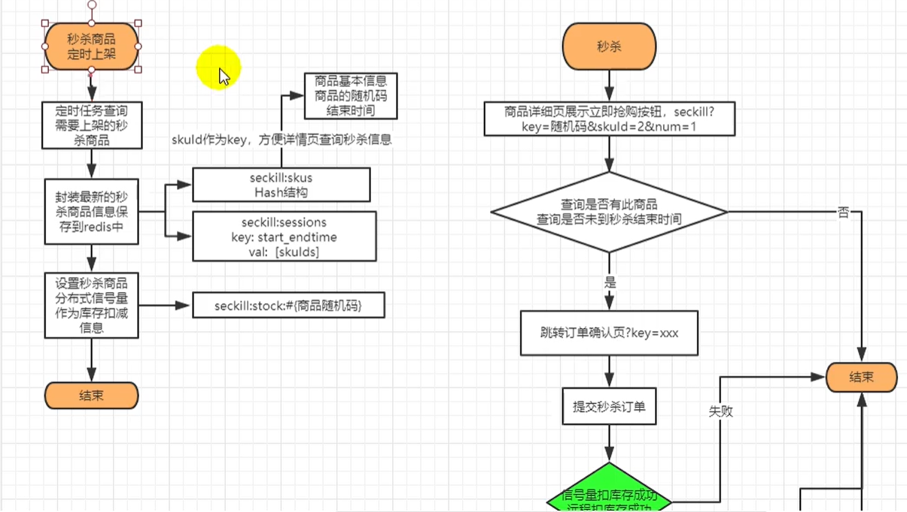
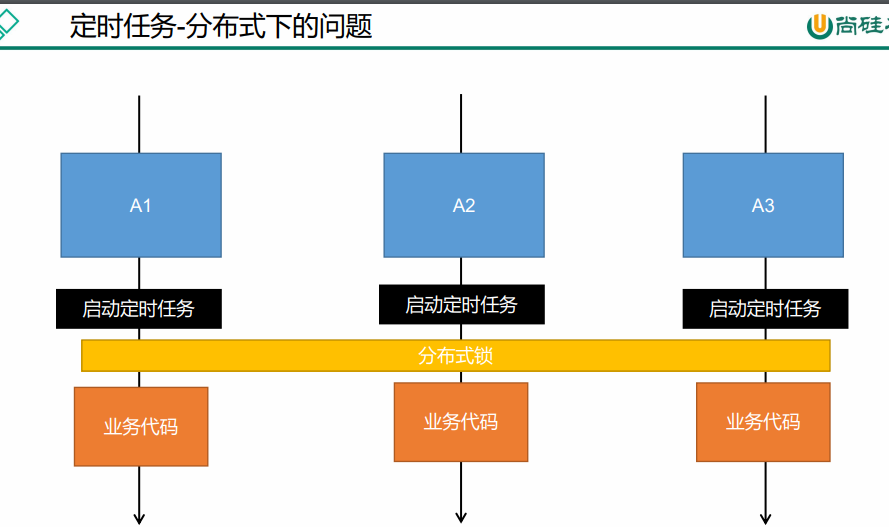
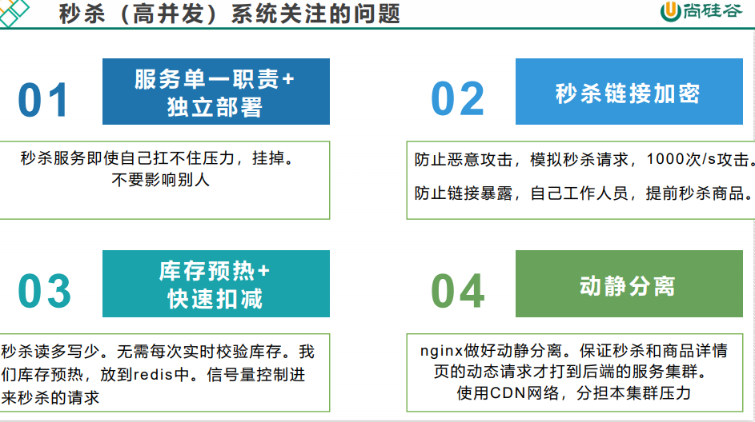
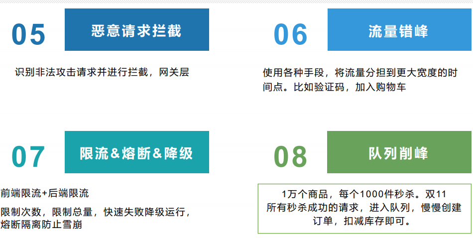
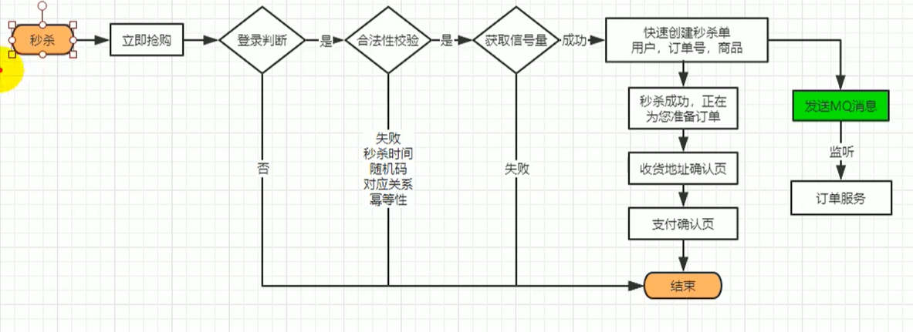
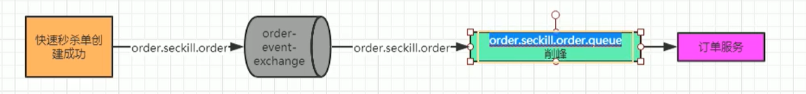

# 秒杀
# 一、秒杀
# 1、秒杀业务
秒杀具有瞬间高并发的特点，针对这一特点，必须要做限流 + 异步 + 缓存（页面静态化） + 独立部署。
限流方式：
- 前端限流，一些高并发的网站直接在前端页面开始限流，例如：小米的验证码设计
- nginx 限流，直接负载部分请求到错误的静态页面：令牌算法 漏斗算法
- 网关限流，限流的过滤器
- 代码中使用分布式信号量
- rabbitmq 限流（能者多劳：chanel.basicQos (1)），保证发挥所有服务器的性能。
# 2. 后台上架秒杀商品

# 二、秒杀商品定时上架
# 配置开启异步 + 定时抽取一个配置
/** | |
* @author WangXuefeng | |
* @version 1.0 | |
* @date 2021/7/29 14:30 | |
* @description | |
*/ | |
@EnableAsync | |
@EnableScheduling | |
@Configuration | |
public class ScheduleConfig { | |
} |
# 时间计算
/** | |
* 当前时间 | |
* @return | |
*/ | |
private String startTime() { | |
LocalDate now = LocalDate.now(); | |
LocalTime min = LocalTime.MIN; | |
LocalDateTime start = LocalDateTime.of(now, min); | |
// 格式化时间 | |
String startFormat = start.format(DateTimeFormatter.ofPattern("yyyy-MM-dd HH:mm:ss")); | |
return startFormat; | |
} | |
/** | |
* 结束时间 | |
* @return | |
*/ | |
private String endTime() { | |
LocalDate now = LocalDate.now(); | |
LocalDate plus = now.plusDays(2); | |
LocalTime max = LocalTime.MAX; | |
LocalDateTime end = LocalDateTime.of(plus, max); | |
// 格式化时间 | |
String endFormat = end.format(DateTimeFormatter.ofPattern("yyyy-MM-dd HH:mm:ss")); | |
return endFormat; | |
} |
@Override | |
public List<SeckillSessionEntity> getLates3DaySession() { | |
// 计算最近三天 | |
// 查出这三天参与秒杀活动的商品 | |
List<SeckillSessionEntity> list = this.baseMapper.selectList(new QueryWrapper<SeckillSessionEntity>() | |
.between("start_time", startTime(), endTime())); | |
if (list != null && list.size() > 0) { | |
List<SeckillSessionEntity> collect = list.stream().map(session -> { | |
Long id = session.getId(); | |
// 查出 sms_seckill_sku_relation 表中关联的 skuId | |
List<SeckillSkuRelationEntity> relationSkus = seckillSkuRelationService.list(new QueryWrapper<SeckillSkuRelationEntity>() | |
.eq("promotion_session_id", id)); | |
session.setRelationSkus(relationSkus); | |
return session; | |
}).collect(Collectors.toList()); | |
return collect; | |
} | |
return null; | |
} |
# 随机码
设置商品的随机码（防止恶意攻击）,
// 随机码 | |
Long currentTime = System.currentTimeMillis(); | |
Long startTime = redisTo.getStartTime(); | |
Long endTime = redisTo.getEndTime(); | |
// 如果当前时间大于等于秒杀活动开始时间并且要小于活动结束时间 | |
if (currentTime >= startTime && currentTime <= endTime) { | |
return redisTo; | |
} | |
redisTo.setRandomCode(null); | |
return redisTo; |
# 信号量
//如果当前这个场次的商品库存信息已经上架就不需要上架
//5、使用库存作为分布式Redisson信号量（限流）
// 使用库存作为分布式信号量
RSemaphore semaphore = redissonClient.getSemaphore(SKU_STOCK_SEMAPHORE + token);
// 商品可以秒杀的数量作为信号量
semaphore.trySetPermits(seckillSkuVo.getSeckillCount());
# 商品上架
@Override | |
public void uploadSeckillSkuLatest3Days() { | |
//1、扫描最近三天的商品需要参加秒杀的活动 | |
R lates3DaySession = couponFeignService.getLates3DaySession(); | |
if (lates3DaySession.getCode() == 0) { | |
// 上架商品 | |
List<SeckillSessionWithSkusVo> sessionData = lates3DaySession.getData("data", new TypeReference<List<SeckillSessionWithSkusVo>>() { | |
}); | |
// 缓存到 Redis | |
//1、缓存活动信息 | |
saveSessionInfos(sessionData); | |
//2、缓存活动的关联商品信息 | |
saveSessionSkuInfo(sessionData); | |
} | |
} | |
/** | |
* 缓存秒杀活动信息 | |
* @param sessions | |
*/ | |
private void saveSessionInfos(List<SeckillSessionWithSkusVo> sessions) { | |
sessions.stream().forEach(session -> { | |
// 获取当前活动的开始和结束时间的时间戳 | |
long startTime = session.getStartTime().getTime(); | |
long endTime = session.getEndTime().getTime(); | |
// 存入到 Redis 中的 key | |
String key = SESSION__CACHE_PREFIX + startTime + "_" + endTime; | |
// 判断 Redis 中是否有该信息，如果没有才进行添加 | |
Boolean hasKey = redisTemplate.hasKey(key); | |
// 缓存活动信息 | |
if (!hasKey) { | |
// 获取到活动中所有商品的 skuId | |
List<String> skuIds = session.getRelationSkus().stream() | |
.map(item -> item.getPromotionSessionId() + "-" + item.getSkuId().toString()).collect(Collectors.toList()); | |
redisTemplate.opsForList().leftPushAll(key,skuIds); | |
} | |
}); | |
} | |
/** | |
* 缓存秒杀活动所关联的商品信息 | |
* @param sessions | |
*/ | |
private void saveSessionSkuInfo(List<SeckillSessionWithSkusVo> sessions) { | |
sessions.stream().forEach(session -> { | |
// 准备 hash 操作，绑定 hash | |
BoundHashOperations<String, Object, Object> operations = redisTemplate.boundHashOps(SECKILL_CHARE_PREFIX); | |
session.getRelationSkus().stream().forEach(seckillSkuVo -> { | |
// 生成随机码 | |
String token = UUID.randomUUID().toString().replace("-", ""); | |
String redisKey = seckillSkuVo.getPromotionSessionId().toString() + "-" + seckillSkuVo.getSkuId().toString(); | |
if (!operations.hasKey(redisKey)) { | |
// 缓存我们商品信息 | |
SeckillSkuRedisTo redisTo = new SeckillSkuRedisTo(); | |
Long skuId = seckillSkuVo.getSkuId(); | |
//1、先查询 sku 的基本信息，调用远程服务 | |
R info = productFeignService.getSkuInfo(skuId); | |
if (info.getCode() == 0) { | |
SkuInfoVo skuInfo = info.getData("skuInfo",new TypeReference<SkuInfoVo>(){}); | |
redisTo.setSkuInfo(skuInfo); | |
} | |
//2、sku 的秒杀信息 | |
BeanUtils.copyProperties(seckillSkuVo,redisTo); | |
//3、设置当前商品的秒杀时间信息 | |
redisTo.setStartTime(session.getStartTime().getTime()); | |
redisTo.setEndTime(session.getEndTime().getTime()); | |
//4、设置商品的随机码（防止恶意攻击） | |
redisTo.setRandomCode(token); | |
// 序列化 json 格式存入 Redis 中 | |
String seckillValue = JSON.toJSONString(redisTo); | |
operations.put(seckillSkuVo.getPromotionSessionId().toString() + "-" + seckillSkuVo.getSkuId().toString(),seckillValue); | |
// 如果当前这个场次的商品库存信息已经上架就不需要上架 | |
//5、使用库存作为分布式 Redisson 信号量（限流） | |
// 使用库存作为分布式信号量 | |
RSemaphore semaphore = redissonClient.getSemaphore(SKU_STOCK_SEMAPHORE + token); | |
// 商品可以秒杀的数量作为信号量 | |
semaphore.trySetPermits(seckillSkuVo.getSeckillCount()); | |
} | |
}); | |
}); | |
} |
# 幂等性保证

这里如果多台服务器定时上架会出现重复上架问题，为了保证幂等性，同一场秒杀的商品只上一次，所以可以用分布式锁来完成
//TODO 保证幂等性问题 | |
// @Scheduled(cron = "*/5 * * * * ? ") | |
@Scheduled(cron = "0/10 * * * * ? ") | |
public void uploadSeckillSkuLatest3Days() { | |
//1、重复上架无需处理 | |
log.info("上架秒杀的商品..."); | |
// 分布式锁 | |
RLock lock = redissonClient.getLock(upload_lock); | |
try { | |
// 加锁 | |
lock.lock(10, TimeUnit.SECONDS); | |
seckillService.uploadSeckillSkuLatest3Days(); | |
} catch (Exception e) { | |
e.printStackTrace(); | |
} finally { | |
lock.unlock(); | |
} | |
} |
// 判断 Redis 中是否有该信息，如果没有才进行添加 | |
Boolean hasKey = redisTemplate.hasKey(key); | |
// 缓存活动信息 | |
if (!hasKey) { | |
// 获取到活动中所有商品的 skuId | |
List<String> skuIds = session.getRelationSkus().stream() | |
.map(item -> item.getPromotionSessionId() + "-" + item.getSkuId().toString()).collect(Collectors.toList()); | |
redisTemplate.opsForList().leftPushAll(key,skuIds); | |
} |
// 准备 hash 操作，绑定 hash | |
BoundHashOperations<String, Object, Object> operations = redisTemplate.boundHashOps(SECKILL_CHARE_PREFIX); | |
session.getRelationSkus().stream().forEach(seckillSkuVo -> { | |
// 生成随机码 | |
String token = UUID.randomUUID().toString().replace("-", ""); | |
String redisKey = seckillSkuVo.getPromotionSessionId().toString() + "-" + seckillSkuVo.getSkuId().toString(); | |
if (!operations.hasKey(redisKey)) { | |
// 缓存我们商品信息 | |
SeckillSkuRedisTo redisTo = new SeckillSkuRedisTo(); | |
Long skuId = seckillSkuVo.getSkuId(); | |
//1、先查询 sku 的基本信息，调用远程服务 | |
R info = productFeignService.getSkuInfo(skuId); | |
if (info.getCode() == 0) { | |
SkuInfoVo skuInfo = info.getData("skuInfo",new TypeReference<SkuInfoVo>(){}); | |
redisTo.setSkuInfo(skuInfo); | |
} | |
//2、sku 的秒杀信息 | |
BeanUtils.copyProperties(seckillSkuVo,redisTo); | |
//3、设置当前商品的秒杀时间信息 | |
redisTo.setStartTime(session.getStartTime().getTime()); | |
redisTo.setEndTime(session.getEndTime().getTime()); | |
//4、设置商品的随机码（防止恶意攻击） | |
redisTo.setRandomCode(token); | |
// 序列化 json 格式存入 Redis 中 | |
String seckillValue = JSON.toJSONString(redisTo); | |
operations.put(seckillSkuVo.getPromotionSessionId().toString() + "-" + seckillSkuVo.getSkuId().toString(),seckillValue); | |
// 如果当前这个场次的商品库存信息已经上架就不需要上架 | |
//5、使用库存作为分布式 Redisson 信号量（限流） | |
// 使用库存作为分布式信号量 | |
RSemaphore semaphore = redissonClient.getSemaphore(SKU_STOCK_SEMAPHORE + token); | |
// 商品可以秒杀的数量作为信号量 | |
semaphore.trySetPermits(seckillSkuVo.getSeckillCount()); | |
} | |
}); | |
}); |
# 三、查询秒杀商品
/** | |
* 当前时间可以参与秒杀的商品信息 | |
* @return | |
*/ | |
@GetMapping(value = "/getCurrentSeckillSkus") | |
@ResponseBody | |
public R getCurrentSeckillSkus() { | |
// 获取到当前可以参加秒杀商品的信息 | |
List<SeckillSkuRedisTo> vos = seckillService.getCurrentSeckillSkus(); | |
return R.ok().data(vos); | |
} |
/** | |
* 获取到当前可以参加秒杀商品的信息 | |
* @return | |
*/ | |
// @SentinelResource(value = "getCurrentSeckillSkusResource",blockHandler = "blockHandler") | |
@Override | |
public List<SeckillSkuRedisTo> getCurrentSeckillSkus() { | |
// try (Entry entry = SphU.entry("seckillSkus")) { | |
//1、确定当前属于哪个秒杀场次 | |
long currentTime = System.currentTimeMillis(); | |
// 从 Redis 中查询到所有 key 以 seckill:sessions 开头的所有数据 | |
Set<String> keys = redisTemplate.keys(SESSION__CACHE_PREFIX + "*"); | |
for (String key : keys) { | |
//seckill:sessions:1594396764000_1594453242000 | |
String replace = key.replace(SESSION__CACHE_PREFIX, ""); | |
String[] s = replace.split("_"); | |
// 获取存入 Redis 商品的开始时间 | |
long startTime = Long.parseLong(s[0]); | |
// 获取存入 Redis 商品的结束时间 | |
long endTime = Long.parseLong(s[1]); | |
// 判断是否是当前秒杀场次 | |
if (currentTime >= startTime && currentTime <= endTime) { | |
//2、获取这个秒杀场次需要的所有商品信息 | |
List<String> range = redisTemplate.opsForList().range(key, -100, 100); | |
BoundHashOperations<String, String, String> hasOps = redisTemplate.boundHashOps(SECKILL_CHARE_PREFIX); | |
assert range != null; | |
List<String> listValue = hasOps.multiGet(range); | |
if (listValue != null && listValue.size() >= 0) { | |
List<SeckillSkuRedisTo> collect = listValue.stream().map(item -> { | |
String items = (String) item; | |
SeckillSkuRedisTo redisTo = JSON.parseObject(items, SeckillSkuRedisTo.class); | |
//redisTo.setRandomCode (null); 当前秒杀开始需要随机码 | |
return redisTo; | |
}).collect(Collectors.toList()); | |
return collect; | |
} | |
break; | |
} | |
} | |
// } catch (BlockException e) { | |
// log.error ("资源被限流 {}",e.getMessage ()); | |
// } | |
return null; | |
} |
产品详情页获取对应产品是否参与秒杀活动
CompletableFuture<Void> seckillFuture = CompletableFuture.runAsync(() -> { | |
//3、远程调用查询当前 sku 是否参与秒杀优惠活动 | |
R skuSeckilInfo = seckillFeignService.getSkuSeckilInfo(skuId); | |
if (skuSeckilInfo.getCode() == 0) { | |
// 查询成功 | |
SeckillSkuVo seckilInfoData = skuSeckilInfo.getData("data", new TypeReference<SeckillSkuVo>() { | |
}); | |
skuItemVo.setSeckillSkuVo(seckilInfoData); | |
if (seckilInfoData != null) { | |
long currentTime = System.currentTimeMillis(); | |
if (currentTime > seckilInfoData.getEndTime()) { | |
skuItemVo.setSeckillSkuVo(null); | |
} | |
} | |
} | |
}, executor); |
/** | |
* 根据 skuId 查询商品是否参加秒杀活动 | |
* @param skuId | |
* @return | |
*/ | |
@GetMapping(value = "/sku/seckill/{skuId}") | |
@ResponseBody | |
public R getSkuSeckilInfo(@PathVariable("skuId") Long skuId) { | |
SeckillSkuRedisTo to = seckillService.getSkuSeckilInfo(skuId); | |
return R.ok().data(to); | |
} |
/** | |
* 根据 skuId 查询商品是否参加秒杀活动 | |
* @param skuId | |
* @return | |
*/ | |
@Override | |
public SeckillSkuRedisTo getSkuSeckilInfo(Long skuId) { | |
//1、找到所有需要秒杀的商品的 key 信息 ---seckill:skus | |
BoundHashOperations<String, String, String> hashOps = redisTemplate.boundHashOps(SECKILL_CHARE_PREFIX); | |
// 拿到所有的 key | |
Set<String> keys = hashOps.keys(); | |
if (keys != null && keys.size() > 0) { | |
//4-45 正则表达式进行匹配 | |
String reg = "\\d-" + skuId; | |
for (String key : keys) { | |
// 如果匹配上了 | |
if (Pattern.matches(reg,key)) { | |
// 从 Redis 中取出数据来 | |
String redisValue = hashOps.get(key); | |
// 进行序列化 | |
SeckillSkuRedisTo redisTo = JSON.parseObject(redisValue, SeckillSkuRedisTo.class); | |
// 随机码 | |
Long currentTime = System.currentTimeMillis(); | |
Long startTime = redisTo.getStartTime(); | |
Long endTime = redisTo.getEndTime(); | |
// 如果当前时间大于等于秒杀活动开始时间并且要小于活动结束时间 | |
if (currentTime >= startTime && currentTime <= endTime) { | |
return redisTo; | |
} | |
redisTo.setRandomCode(null); | |
return redisTo; | |
} | |
} | |
} | |
return null; | |
} |


# 四、秒杀请求


/** | |
* 商品进行秒杀 (秒杀开始) | |
* @param killId | |
* @param key | |
* @param num | |
* @return | |
*/ | |
@GetMapping(value = "/kill") | |
public String seckill(@RequestParam("killId") String killId, | |
@RequestParam("key") String key, | |
@RequestParam("num") Integer num, | |
Model model) { | |
String orderSn = null; | |
try { | |
//1、判断是否登录 | |
orderSn = seckillService.kill(killId,key,num); | |
model.addAttribute("orderSn",orderSn); | |
} catch (Exception e) { | |
e.printStackTrace(); | |
} | |
return "success"; | |
} |
/** | |
* 当前商品进行秒杀（秒杀开始） | |
* @param killId | |
* @param key | |
* @param num | |
* @return | |
*/ | |
@Override | |
public String kill(String killId, String key, Integer num) throws InterruptedException { | |
long s1 = System.currentTimeMillis(); | |
// 获取当前用户的信息 | |
MemberResponseVo user = LoginUserInterceptor.loginUser.get(); | |
//1、获取当前秒杀商品的详细信息从 Redis 中获取 | |
BoundHashOperations<String, String, String> hashOps = redisTemplate.boundHashOps(SECKILL_CHARE_PREFIX); | |
String skuInfoValue = hashOps.get(killId); | |
if (StringUtils.isEmpty(skuInfoValue)) { | |
return null; | |
} | |
//(合法性效验) | |
SeckillSkuRedisTo redisTo = JSON.parseObject(skuInfoValue, SeckillSkuRedisTo.class); | |
Long startTime = redisTo.getStartTime(); | |
Long endTime = redisTo.getEndTime(); | |
long currentTime = System.currentTimeMillis(); | |
// 判断当前这个秒杀请求是否在活动时间区间内 (效验时间的合法性) | |
if (currentTime >= startTime && currentTime <= endTime) { | |
//2、效验随机码和商品 id | |
String randomCode = redisTo.getRandomCode(); | |
String skuId = redisTo.getPromotionSessionId() + "-" +redisTo.getSkuId(); | |
if (randomCode.equals(key) && killId.equals(skuId)) { | |
//3、验证购物数量是否合理和库存量是否充足 | |
Integer seckillLimit = redisTo.getSeckillLimit(); | |
// 获取信号量 | |
String seckillCount = redisTemplate.opsForValue().get(SKU_STOCK_SEMAPHORE + randomCode); | |
Integer count = Integer.valueOf(seckillCount); | |
// 判断信号量是否大于 0, 并且买的数量不能超过库存 | |
if (count > 0 && num <= seckillLimit && count > num ) { | |
//4、验证这个人是否已经买过了（幂等性处理）, 如果秒杀成功，就去占位。userId-sessionId-skuId | |
//SETNX 原子性处理 | |
String redisKey = user.getId() + "-" + skuId; | |
// 设置自动过期 (活动结束时间 - 当前时间) | |
Long ttl = endTime - currentTime; | |
Boolean aBoolean = redisTemplate.opsForValue().setIfAbsent(redisKey, num.toString(), ttl, TimeUnit.MILLISECONDS); | |
if (aBoolean) { | |
// 占位成功说明从来没有买过，分布式锁 (获取信号量 - 1) | |
RSemaphore semaphore = redissonClient.getSemaphore(SKU_STOCK_SEMAPHORE + randomCode); | |
//TODO 秒杀成功，快速下单 | |
boolean semaphoreCount = semaphore.tryAcquire(num, 100, TimeUnit.MILLISECONDS); | |
// 保证 Redis 中还有商品库存 | |
if (semaphoreCount) { | |
// 创建订单号和订单信息发送给 MQ | |
// 秒杀成功 快速下单 发送消息到 MQ 整个操作时间在 10ms 左右 | |
String timeId = IdWorker.getTimeId(); | |
SeckillOrderTo orderTo = new SeckillOrderTo(); | |
orderTo.setOrderSn(timeId); | |
orderTo.setMemberId(user.getId()); | |
orderTo.setNum(num); | |
orderTo.setPromotionSessionId(redisTo.getPromotionSessionId()); | |
orderTo.setSkuId(redisTo.getSkuId()); | |
orderTo.setSeckillPrice(redisTo.getSeckillPrice()); | |
rabbitTemplate.convertAndSend("order-event-exchange","order.seckill.order",orderTo); | |
long s2 = System.currentTimeMillis(); | |
log.info("耗时..." + (s2 - s1)); | |
return timeId; | |
} | |
} | |
} | |
} | |
} | |
long s3 = System.currentTimeMillis(); | |
log.info("耗时..." + (s3 - s1)); | |
return null; | |
} |
创建队列消费成功秒杀的订单
@Slf4j | |
@Component | |
@RabbitListener(queues = "order.seckill.order.queue") | |
public class OrderSeckillListener { | |
@Autowired | |
private OrderService orderService; | |
@RabbitHandler | |
public void listener(SeckillOrderTo orderTo, Channel channel, Message message) throws IOException { | |
log.info("准备创建秒杀单的详细信息..."); | |
try { | |
orderService.createSeckillOrder(orderTo); | |
channel.basicAck(message.getMessageProperties().getDeliveryTag(),false); | |
} catch (Exception e) { | |
channel.basicReject(message.getMessageProperties().getDeliveryTag(),true); | |
} | |
} | |
} |
/** | |
* 创建秒杀单 | |
* @param orderTo | |
*/ | |
@Override | |
public void createSeckillOrder(SeckillOrderTo orderTo) { | |
//TODO 保存订单信息 | |
OrderEntity orderEntity = new OrderEntity(); | |
orderEntity.setOrderSn(orderTo.getOrderSn()); | |
orderEntity.setMemberId(orderTo.getMemberId()); | |
orderEntity.setCreateTime(new Date()); | |
BigDecimal totalPrice = orderTo.getSeckillPrice().multiply(BigDecimal.valueOf(orderTo.getNum())); | |
orderEntity.setPayAmount(totalPrice); | |
orderEntity.setStatus(OrderStatusEnum.CREATE_NEW.getCode()); | |
// 保存订单 | |
this.save(orderEntity); | |
// 保存订单项信息 | |
OrderItemEntity orderItem = new OrderItemEntity(); | |
orderItem.setOrderSn(orderTo.getOrderSn()); | |
orderItem.setRealAmount(totalPrice); | |
orderItem.setSkuQuantity(orderTo.getNum()); | |
// 保存商品的 spu 信息 | |
R spuInfo = productFeignService.getSpuInfoBySkuId(orderTo.getSkuId()); | |
SpuInfoVo spuInfoData = spuInfo.getData("data", new TypeReference<SpuInfoVo>() { | |
}); | |
orderItem.setSpuId(spuInfoData.getId()); | |
orderItem.setSpuName(spuInfoData.getSpuName()); | |
orderItem.setSpuBrand(spuInfoData.getBrandName()); | |
orderItem.setCategoryId(spuInfoData.getCatalogId()); | |
// 保存订单项数据 | |
orderItemService.save(orderItem); | |
} |
异常情况：https://www.cnblogs.com/luao/p/14633264.html#_label0
多线程环境下进行 DEBUG：https://blog.csdn.net/java_lifeng/article/details/100662199